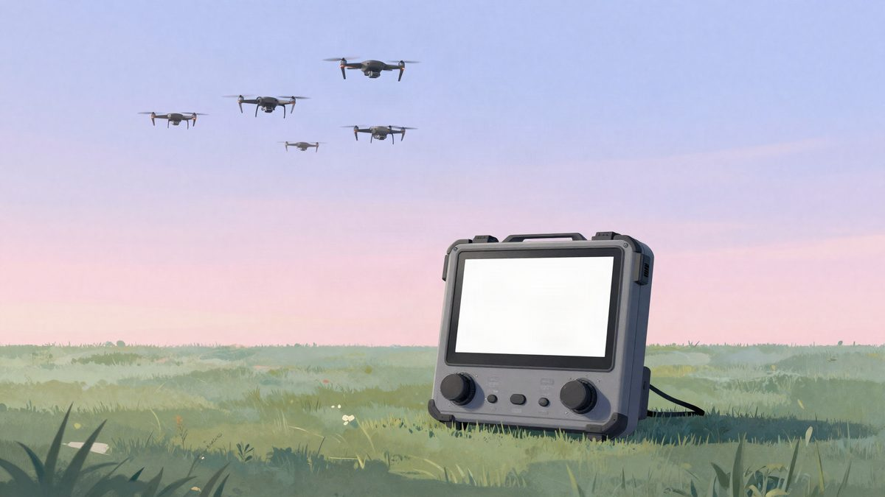
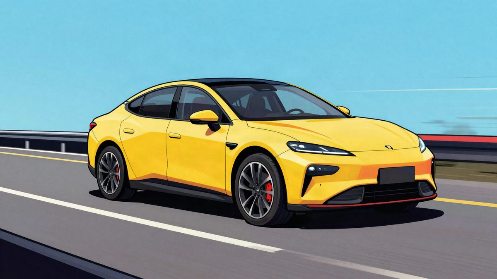
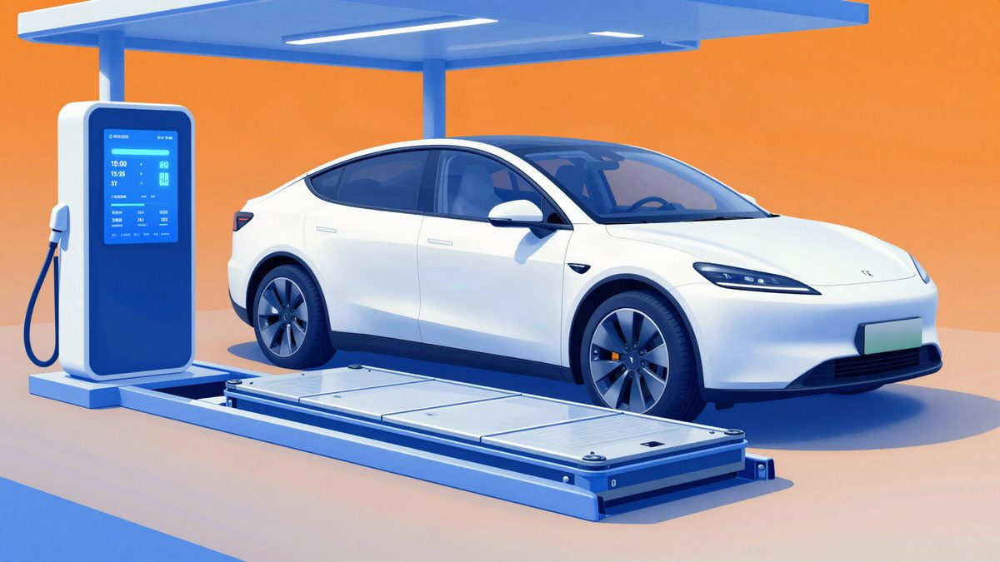

Terra Drone je razvio vlastiti GCS za nadzor više presretačkih dronova i isporučio ga japanskoj agenciji za obrambenu opremu

Terra Drone je japanskoj agenciji za obrambenu opremu isporučila GCS, zemaljsku kontrolnu stanicu za istodobno upravljanje s više presretačkih dronova. Tvrtka tvrdi da je sustav sama projektirala, razvila i pustila u serijsku proizvodnju u otprilike tri mjeseca. Cijena i dostupnost izvan Japana još nisu poznate.
Terra Drone je japanskoj agenciji za obrambenu opremu isporučio domaći GCS (Ground Control Station), zemaljsku kontrolnu stanicu za upravljanje i nadzor više presretačkih dronova istodobno. Tokijska tvrtka kaže da je sustav sama projektirala, razvila i pustila u serijsku proizvodnju u otprilike tri mjeseca.
GCS je zapovjedno mjesto drona: s tla se upravlja letjelicama i prati njihov rad. Kad jedan sustav vodi više letjelica, operateru je lakše, a dronovi se učinkovitije koriste.
Zašto više dronova pod jednim operaterom
Terra Drone kao razlog navodi porast napada dronovima u svijetu. Protiv većeg broja bespilotnih letjelica treba upotrijebiti više presretača odjednom. Uz to, japanske Snage samoobrane teško popunjavaju osoblje, pa im trebaju sustavi koje može posluživati manji broj ljudi.
Japanska vlada je bespilotne letjelice uvrstila u "posebno važne materijale" prema zakonu o promicanju gospodarske sigurnosti i jača domaću opskrbu. Terra Drone tvrdi da je zbog zaštite informacija i stabilne opskrbe važno da se GCS, koji upravlja letom i podacima o letjelici, može razvijati, mijenjati i održavati u zemlji.
Što sustav nudi
Terra Drone tvrdi da je GCS napravljen za rad jednog operatera. Ima 15,6-inčni Full HD zaslon na kojem se u stvarnom vremenu vide položaj svake letjelice i stanje baterije. Podržava prebacivanje između načina leta uz pomoć GNSS-a i senzora te načina visoke manevarske sposobnosti, u kojem su pomoćne funkcije djelomično ili potpuno isključene. Radi na baterije, pa se može koristiti i na otvorenom.
Domaćim razvojem i proizvodnjom Terra Drone, kaže, smanjuje ovisnost o stranim sustavima, a funkcije i održavanje može brzo i fleksibilno prilagođavati potrebama korisnika na terenu.
Obrana kao novi smjer
Terra Drone se u obrambeni sektor ozbiljnije uključio u ožujku 2026. Od tada širi ponudu presretačkih dronova i radi na njihovoj domaćoj proizvodnji. Isporukom GCS-a, kaže, sada može razvijati i opskrbljivati letjelice, ali i zemaljski sustav za upravljanje letom i nadzor.
U planu je daljnje unaprjeđenje funkcija za integrirano upravljanje više letjelica te odgovor na obrambene potrebe u Japanu i inozemstvu. Terra Drone je inače poznat po dronovima i uslugama za mjerenja, inspekcije i poljoprivredu te po sustavima upravljanja zračnim prometom (UTM).
Izvor: PR TIMES (JP)
Povezani članci
 Photon Matrix: kineski laser navodno uništava do 30 komaraca u sekundi22. studenoga 2026.
Photon Matrix: kineski laser navodno uništava do 30 komaraca u sekundi22. studenoga 2026.
Xiaomi tvrdi da Pengcheng N70 ostaje stabilan i kad na 160 km/h puknu dvije gume14. studenoga 2026.
CATL je predstavio bateriju Chocolate Battery 30# od 100 kWh: zamjena za 99 sekundi i doživotno jamstvo27. studenoga 2026.